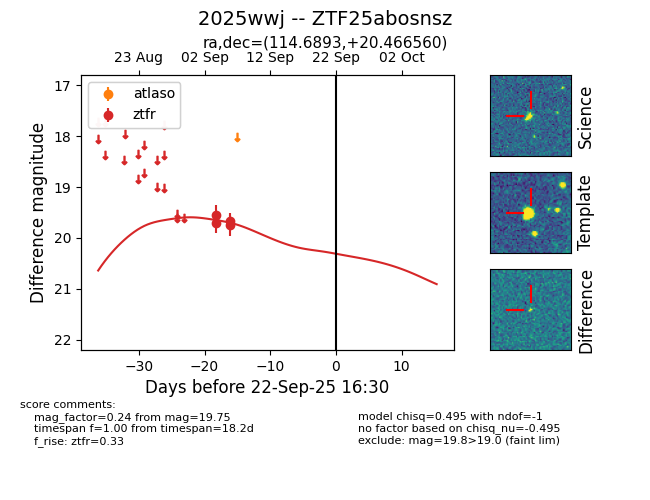
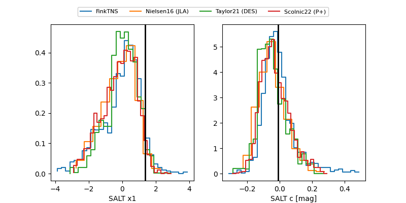

FINK: ZTF25abosnsz
Lasair: ZTF25abosnsz
ALeRCE: ZTF25abosnsz
TNS: 2025wwj
YSE: 2025wwj
ZTF25abosnsz (ztf,fink)
2025wwj (tns,yse)
equatorial (ra, dec) = (114.6893,+20.46656)
galactic (l, b) = (199.2272,+19.29157)


last ztfr=19.75
4 ztfr detections